May 2026
Ahmed Saeed received the NSF CAREER Award.
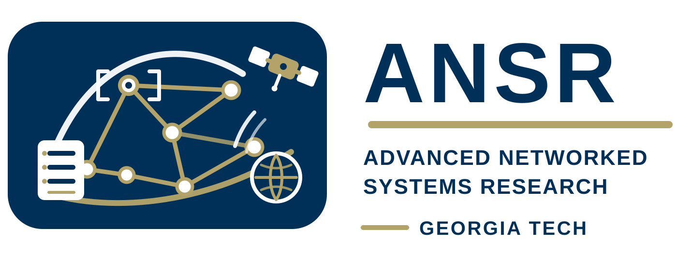
We build networked computer systems that are fast, efficient, sustainable, and easier to reason about at scale.
The Advanced Networked Systems Research Lab at Georgia Tech is led by Ahmed Saeed. Our research spans the theory, design, and implementation of scalable computer networks and computer systems, with a focus on resource scheduling, congestion control, operating systems, Internet measurement, and formal methods.
We work on systems that operate under real pressure: cloud and datacenter services, edge and satellite networks, and infrastructure whose cost, energy use, and reliability shape everyday life. The lab combines principled models with deployable mechanisms, aiming for tools that improve performance without hiding the tradeoffs that operators and developers need to understand.
See the full lab publication list.
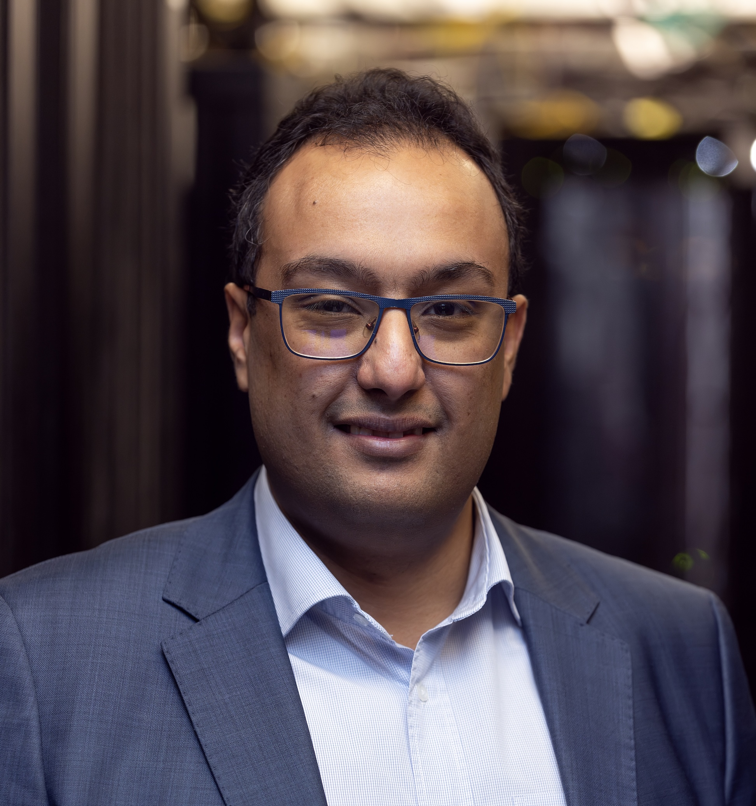
Assistant Professor in the School of Computer Science and BBISS Fellow at Georgia Tech.
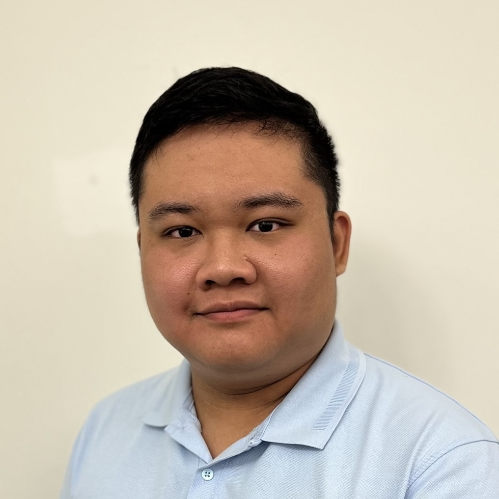
PhD student
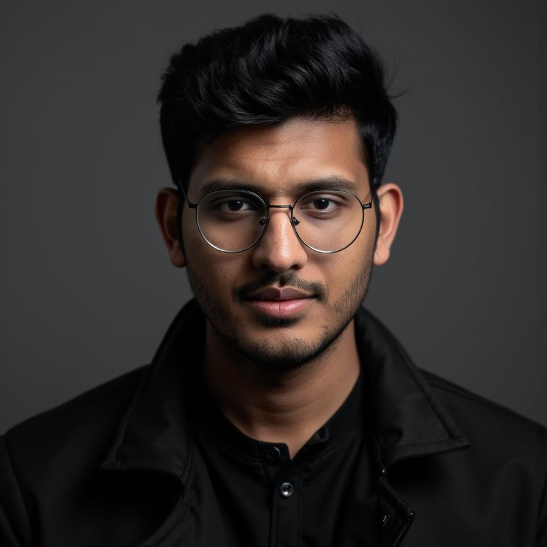
PhD student
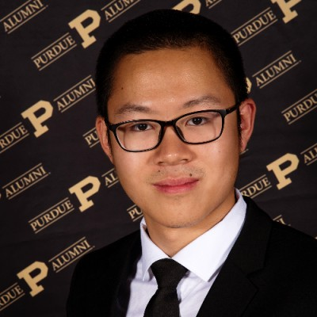
PhD student
MSc alumnus
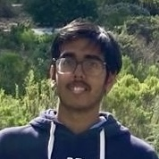
MSc alumnus
Now at Arista Networks
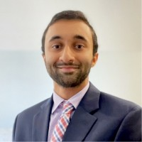
MSc alumnus
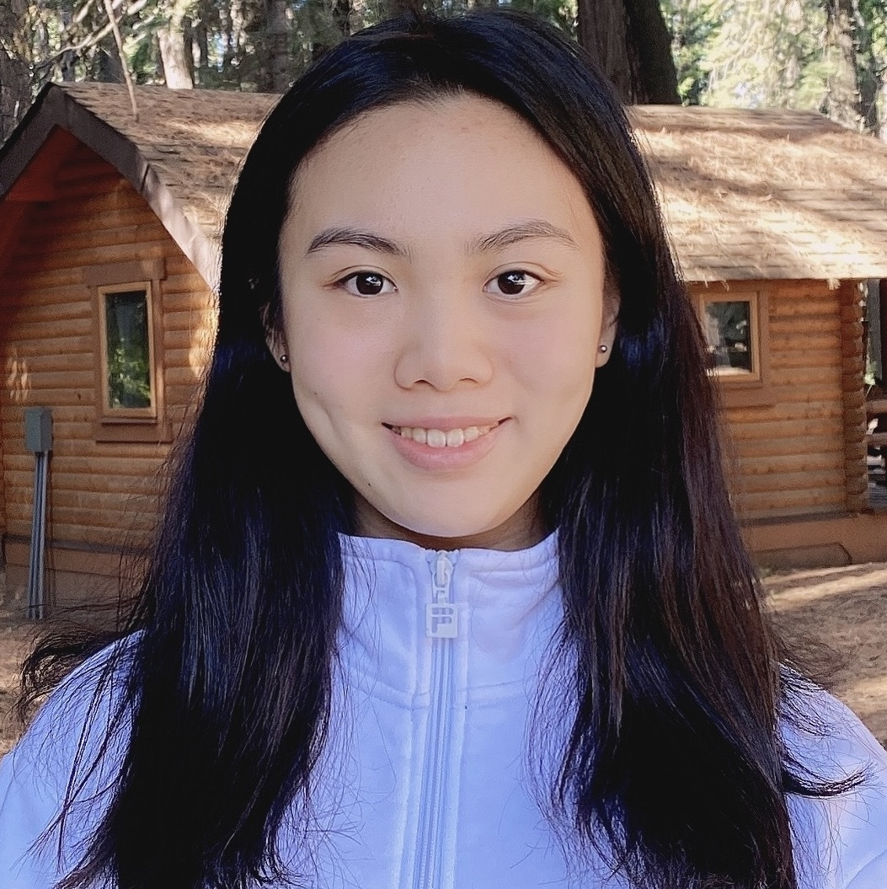
BS, Fall 2022 - Fall 2025
Now at DoorDash
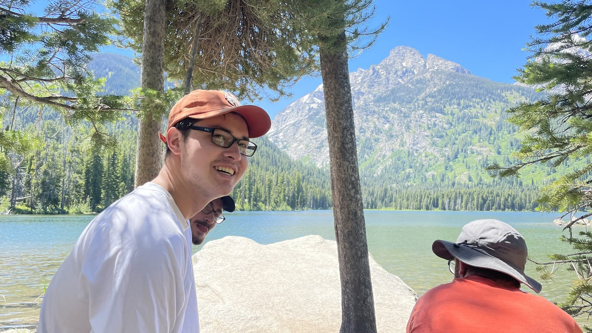
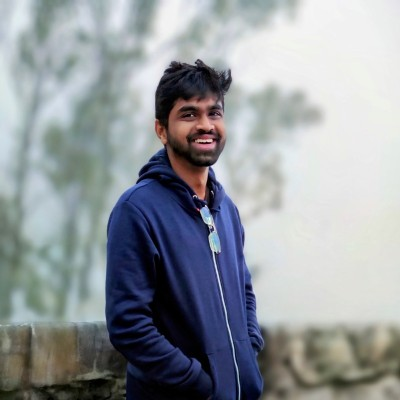
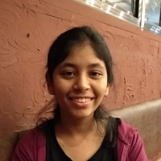
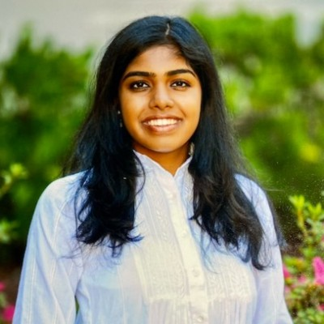
We are interested in working with highly motivated PhD, master's, and undergraduate students who want to build and understand networked systems from first principles through real implementations.
Prospective students can read more about the group through Ahmed Saeed's homepage and contact him at asaeed@cc.gatech.edu.